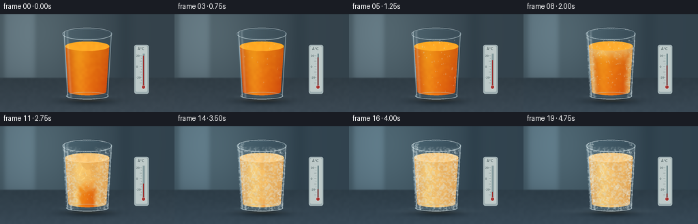
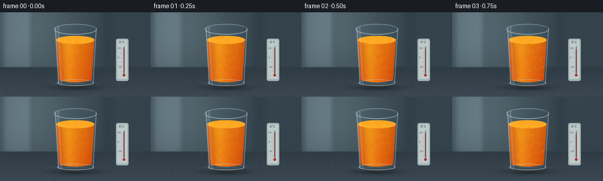

CODING AGENTS AS PIXEL WORLD MODELS
traex/GPT-6.1-Sol · phygen_092
点击播放 · 原生 RGB 像素
逐轮保存的候选
回放视频、检查图与代码变化。
每份候选均可单独播放。实际图片检查记录在下方工具轨迹中。
候选 01播放与检查图
点击播放 · 原生 RGB 像素


展开代码变化
--- 上一保存版本
+++ 本次保存版本
@@ -0,0 +1,218 @@
+from pathlib import Path
+import math
+import numpy as np
+from PIL import Image, ImageDraw, ImageFilter, ImageFont
+import artifact_io
+
+ROOT = Path(__file__).resolve().parent
+W,H,S = 256,144,4
+WW,HH = W*S,H*S
+rng = np.random.default_rng(921)
+y,x = np.mgrid[0:HH,0:WW].astype(np.float32)/S
+
+def smooth(a,b,v):
+ q=np.clip((v-a)/(b-a),0,1)
+ return q*q*(3-2*q)
+
+def mix(canvas,color,alpha):
+ a=np.clip(alpha,0,1)
+ if np.ndim(a)==2: a=a[...,None]
+ return canvas*(1-a)+np.asarray(color)*a
+
+def ellipse(cx,cy,rx,ry):
+ return ((x-cx)/rx)**2+((y-cy)/ry)**2
+
+def stroke(draw,coords,fill,width=1):
+ draw.line([(int(a*S),int(b*S)) for a,b in coords],fill=fill,width=max(1,int(width*S)))
+
+def ell(draw,box,fill=None,outline=None,width=1):
+ draw.ellipse(tuple(int(a*S) for a in box),fill=fill,outline=outline,width=max(1,int(width*S)))
+
+# All textures are fixed in space so the timelapse changes state, not noise.
+noise=rng.normal(0,1,(HH,WW)).astype(np.float32)
+coarse=np.asarray(Image.fromarray(rng.integers(0,256,(36,64),dtype=np.uint8)).resize((WW,HH),Image.Resampling.BICUBIC).filter(ImageFilter.GaussianBlur(S*.7)),dtype=np.float32)/255
+fine=np.asarray(Image.fromarray(rng.integers(0,256,(72,128),dtype=np.uint8)).resize((WW,HH),Image.Resampling.BICUBIC),dtype=np.float32)/255
+# Softly lit, unfocused cold-room background, with a slate work surface.
+bg=np.zeros((HH,WW,3),np.float32)
+bg[:]=[52,66,75]
+light=np.exp(-((x-51)/90)**2-((y-26)/110)**2)
+bg+=light[...,None]*np.array([31,35,34])
+strip=np.exp(-((x-29)/23)**8)*np.exp(-((y-38)/65)**8)
+bg+=strip[...,None]*np.array([20,22,23])
+bg-=np.exp(-((x-183)/13)**2)[...,None]*6
+horizon=smooth(92,95,y)
+table=np.stack([48+.23*(y-95),60+.25*(y-95),68+.3*(y-95)],axis=-1)
+table+= (coarse-.5)[...,None]*3 + noise[...,None]*.30
+bg=mix(bg,table,horizon)
+# Soft contact shadows and a small transmitted amber caustic under the glass.
+shadow=np.exp(-ellipse(129,128,45,6)*1.6)
+bg=mix(bg,[15,25,32],shadow*.66)
+bg+=np.exp(-ellipse(129,126.5,25,2.5))[...,None]*[18,10,1]
+
+# Glass and contents masks, with mildly tapered sides and rounded heel.
+grx=36.4-(np.clip(y-29,0,91)/91)*5.2
+glass=((y>=29)&(y<=119)&(np.abs(x-128)<=grx)) | (ellipse(128,29,36.4,8.8)<=1) | (ellipse(128,119,31.2,6.3)<=1)
+glass=glass.astype(np.float32)
+body_w=32.4-np.clip((y-47)/68,0,1)*4.6
+body=((y>=47)&(y<=114)&(np.abs(x-128)<body_w)) | (ellipse(128,114,27.8,5.3)<1)
+body=body.astype(np.float32)
+# A fine irregular internal crystal structure made from a Voronoi field.
+seeds=rng.uniform([93,40],[162,121],(75,2))
+d1=np.full((HH,WW),1e6,np.float32); d2=d1.copy(); cell=np.zeros((HH,WW),np.float32)
+for j,(sx,sy) in enumerate(seeds):
+ d=(x-sx)**2+(y-sy)**2
+ take=d<d1
+ d2=np.where(take,d1,np.minimum(d2,d))
+ d1=np.where(take,d,d1)
+ cell=np.where(take,(j%11)/10,cell)
+crystal_edges=np.exp(-((np.sqrt(d2)-np.sqrt(d1))/.24)**2)
+# Internal freezing starts at the exposed surface and the glass walls.
+side_depth=np.maximum(0,body_w-np.abs(x-128))/body_w
+surface_depth=np.clip((y-45)/64,0,1)
+arrival=np.minimum(side_depth*.78+.08,surface_depth*.67+.07)
+arrival+=.10*(coarse-.5)
+# Small moisture droplets on the outside of the transparent glass.
+drops=[]
+for j in range(100):
+ px=rng.uniform(96,160); py=rng.uniform(37,115)
+ if abs(px-128)<36-(py-29)/91*5.2-1:
+ drops.append((px,py,rng.uniform(.26,.88),rng.uniform(.05,.30)))
+# Dendritic frost is a stationary, branching geometrical growth pattern.
+frost=[]
+def branch(px,py,angle,length,birth,depth):
+ ex=px+math.cos(angle)*length; ey=py+math.sin(angle)*length
+ frost.append((px,py,ex,ey,birth,.13+depth*.035))
+ if depth>0:
+ for f,sgn in ((.38,-1),(.62,1),(.83,-1)):
+ qx=px+(ex-px)*f; qy=py+(ey-py)*f
+ branch(qx,qy,angle+sgn*rng.uniform(.45,.82),length*rng.uniform(.27,.48),birth+.07+f*.04,depth-1)
+for j in range(85):
+ py=rng.uniform(29,120)
+ if j<65:
+ sgn=-1 if j%2 else 1
+ px=128+sgn*(35-(py-29)/91*5.0-rng.uniform(0,3))
+ angle=(math.pi if sgn==1 else 0)+rng.uniform(-1.2,1.2)
+ birth=.15+rng.uniform(0,.47)
+ else:
+ px=rng.uniform(104,153); py=rng.uniform(47,113)
+ angle=rng.uniform(0,math.tau); birth=rng.uniform(.5,.77)
+ branch(px,py,angle,rng.uniform(3,10),birth,3)
+
+# Physical alcohol thermometer, sitting behind and to the right of the glass.
+try:
+ font=ImageFont.truetype('/usr/share/fonts/truetype/dejavu/DejaVuSans.ttf',4*S)
+ titlefont=ImageFont.truetype('/usr/share/fonts/truetype/dejavu/DejaVuSans.ttf',5*S)
+except OSError:
+ font=ImageFont.load_default(); titlefont=font
+
+frames=[]
+for k in range(20):
+ t=k/19
+ freeze=smooth(.14,.95,t)
+ cold=smooth(0,.9,t)
+ a=bg.copy()
+ a=mix(a,a*np.array([.91,1.015,1.065]),cold*.7)
+ # Very low, thin fog behind the glass: no steam plume rising from cold juice.
+ mist=np.exp(-((y-125)/3.5)**2)*(np.exp(-((x-88)/35)**2)+np.exp(-((x-169)/28)**2))
+ a=mix(a,[159,179,188],mist*.08*smooth(.5,1,t))
+ # Refracted / slightly desaturated view through the empty upper part of glass.
+ a=mix(a,np.clip(a*np.array([.97,1.035,1.05])+3,0,255),glass*.65)
+ ice=smooth(arrival-.10,arrival+.15,freeze)*body
+ # The orange juice goes from transparent saturated liquid to a pale frozen solid.
+ nx=np.clip((x-128)/body_w,-1,1)
+ warm=np.zeros_like(a)
+ warm[...,0]=231+13*np.exp(-((nx+.40)/.45)**2)-21*nx**2
+ warm[...,1]=121+32*np.exp(-((nx+.43)/.42)**2)-31*nx**2-0.24*(y-48)
+ warm[...,2]=13+9*np.exp(-((nx+.4)/.5)**2)
+ warm+=(coarse-.5)[...,None]*np.array([5,8,2])
+ frozen=np.zeros_like(a)
+ frozen[:]=[242,181,91]
+ frozen+=np.exp(-((nx+.45)/.4)**2)[...,None]*[7,20,19]
+ frozen-=nx[...,None]**2*np.array([18,24,17])
+ frozen+=(cell-.5)[...,None]*[7,11,9]+(coarse-.5)[...,None]*[10,12,10]
+ frozen+=crystal_edges[...,None]*[10,19,24]
+ juice=warm*(1-ice[...,None])+frozen*ice[...,None]
+ a=mix(a,juice,body*.98)
+ # Surface meniscus becomes a solid, textured cap; ice expansion is only slight.
+ top_y=47-1.15*freeze
+ surf=(ellipse(128,top_y,32.4,7.0)<1).astype(np.float32)
+ surface_ice=smooth(.17,.64,freeze)
+ surface=np.zeros_like(a); surface[:]=[255,169,36]
+ surface+=(coarse-.5)[...,None]*[7,9,3]
+ cap=np.zeros_like(a); cap[:]=[250,200,122]
+ cap+=(coarse-.5)[...,None]*[16,18,16]+crystal_edges[...,None]*[5,17,22]
+ a=mix(a,surface*(1-surface_ice)+cap*surface_ice,surf)
+ # Localized patches of frost on the exterior spread, rather than changing all at once.
+ edge=np.abs((x-128)/grx)
+ frost_arrival=.13+(1-edge)*.68+.18*(coarse-.5)
+ frost_phase=smooth(frost_arrival-.08,frost_arrival+.17,freeze)
+ frost_grain=np.clip((fine-.39)*2.1,0,1)
+ exterior=frost_phase*glass*(.08+.34*frost_grain)
+ exterior*=smooth(28,36,y)
+ a=mix(a,[223,235,233],exterior)
+ # Optical reflections stay bright and narrowly curved, consistent with a glass cylinder.
+ left_ref=np.exp(-((x-(128-grx+2.5))/.7)**2)
+ right_ref=np.exp(-((x-(128+grx-1.2))/.48)**2)
+ broad_ref=np.exp(-((x-(128-grx+7.0))/1.7)**2)
+ a=mix(a,[222,237,242],glass*(left_ref*.59+right_ref*.60+broad_ref*.20))
+ a+=np.exp(-ellipse(126,121,27,2))[...,None]*[20,25,25]
+ im=Image.fromarray(np.clip(a,0,255).astype(np.uint8))
+ layer=Image.new('RGBA',(WW,HH)); d=ImageDraw.Draw(layer)
+ # Moisture first condenses, then beads become frost-white.
+ for px,py,r,b in drops:
+ visible=smooth(b,b+.16,t)
+ if visible<=0: continue
+ alpha=int(visible*(1-.50*freeze)*78)
+ ell(d,(px-r,py-r*1.2,px+r,py+r*1.2),fill=(205,228,232,alpha),outline=(235,248,250,int(alpha*.85)),width=.15)
+ stroke(d,[(px-r*.4,py-r*.4),(px-r*.4,py)],(252,253,248,min(130,alpha+30)),.18)
+ # Multi-scale dendritic patterns on the front glass, clipped to its silhouette.
+ frost_layer=Image.new('RGBA',(WW,HH)); fd=ImageDraw.Draw(frost_layer)
+ for px,py,ex,ey,b,w in frost:
+ growth=smooth(b,b+.17,t)
+ if growth<=0: continue
+ stroke(fd,[(px,py),(px+(ex-px)*growth,py+(ey-py)*growth)],(233,244,241,int(155*growth)),w)
+ frost_alpha=np.asarray(frost_layer.getchannel('A'),dtype=np.float32)*glass
+ frost_layer.putalpha(Image.fromarray(frost_alpha.astype(np.uint8)))
+ layer=Image.alpha_composite(layer,frost_layer); d=ImageDraw.Draw(layer)
+ # Elliptical polished rim and thick glass heel.
+ ell(d,(91.6,20.2,164.4,37.8),outline=(192,216,228,155),width=.7)
+ ell(d,(94,22.3,162,35.8),outline=(108,139,155,115),width=.4)
+ # Back-rim highlight and the front-rim highlight have different brightness.
+ d.arc((int(91.6*S),int(20.2*S),int(164.4*S),int(37.8*S)),185,330,fill=(231,243,249,202),width=2)
+ d.arc((int(91.6*S),int(20.2*S),int(164.4*S),int(37.8*S)),10,169,fill=(232,246,249,200),width=3)
+ ell(d,(97,114.6,159,125.4),outline=(183,205,214,156),width=.75)
+ d.arc((97*S,int(116.4*S),159*S,int(125*S)),0,180,fill=(220,234,237,190),width=3)
+ # Frozen surface gives an irregular white orange-tinted rim.
+ if surface_ice>.01:
+ d.arc((int(95.6*S),int((top_y-7)*S),int(160.4*S),int((top_y+7)*S)),0,180,fill=(255,223,167,int(surface_ice*175)),width=3)
+ if freeze>.05:
+ # Frost at the top and thick heel, in small grains rather than smooth paint.
+ for j in range(110):
+ z=(j*0.61803398875)%1
+ ang=z*math.tau
+ px=128+35.5*math.cos(ang); py=29+8.2*math.sin(ang)
+ aa=int(smooth(.20+(j%17)/35,.37+(j%17)/35,t)*170)
+ ell(d,(px-.26,py-.23,px+.26,py+.23),fill=(235,247,245,aa))
+ im=Image.alpha_composite(im.convert('RGBA'),layer)
+ # The thermometer's actual red column drops from +20 to -28 Celsius.
+ tl=Image.new('RGBA',(WW,HH)); q=ImageDraw.Draw(tl)
+ q.rounded_rectangle((197*S,45*S,218*S,117*S),radius=3*S,fill=(158,175,178,255),outline=(198,211,211,255),width=2)
+ q.rounded_rectangle((199*S,47*S,216*S,114*S),radius=2*S,fill=(190,202,201,255))
+ q.text((202*S,48*S),'°C',font=titlefont,fill=(47,65,68,255))
+ stroke(q,[(210.5,58),(210.5,107)],(87,113,118,255),2.4)
+ stroke(q,[(210.1,58),(210.1,107)],(219,234,232,255),.7)
+ for temp in range(-30,21,5):
+ yy=61+(20-temp)*.80
+ stroke(q,[(205 if temp%10==0 else 207,yy),(208,yy)],(65,85,88,255),.4)
+ if temp in (20,0,-20):
+ q.text((199.8*S,(yy-2.0)*S),str(temp),font=font,fill=(57,77,81,255))
+ temperature=20-48*smooth(0,1,t)
+ yy=61+(20-temperature)*.8
+ stroke(q,[(210.5,yy),(210.5,107)],(172,48,46,255),1.25)
+ ell(q,(207.6,104.3,213.4,110.1),fill=(169,49,46,255),outline=(214,227,226,255),width=.6)
+ stroke(q,[(209.5,105.5),(209.5,107)],(245,176,166,170),.3)
+ im=Image.alpha_composite(im,tl).convert('RGB')
+ im=im.resize((W,H),Image.Resampling.LANCZOS)
+ frames.append(np.asarray(im,dtype=np.uint8))
+artifact_io.save(np.stack(frames),ROOT)
+print('Saved 20 RGB frames at 256Ã144, 4 fps.')
可观测工具轨迹
实际执行的命令与返回图片。
命令 1exit 0
/bin/bash -lc "ls -la && cat prompt.txt && printf '\\n--- RULES ---\\n' && cat GENERATION_RULES.md && printf '\\n--- SPEC ---\\n' && cat task_spec.json"
命令 2exit 0
/bin/bash -lc "cat artifact_io.py && python - <<'PY' import numpy, PIL print(numpy.__version__,PIL.__version__) PY"
命令 3exit 0
/bin/bash -lc "cat > generate.py <<'PY'
from pathlib import Path
import math
import numpy as np
from PIL import Image, ImageDraw, ImageFilter, ImageFont
import artifact_io
ROOT = Path(__file__).resolve().parent
W,H,S = 256,144,4
WW,HH = W*S,H*S
rng = np.random.default_rng(921)
y,x = np.mgrid[0:HH,0:WW].astype(np.float32)/S
def smooth(a,b,v):
q=np.clip((v-a)/(b-a),0,1)
return q*q*(3-2*q)
def mix(canvas,color,alpha):
a=np.clip(alpha,0,1)
if np.ndim(a)==2: a=a[...,None]
return canvas*(1-a)+np.asarray(color)*a
def ellipse(cx,cy,rx,ry):
return ((x-cx)/rx)**2+((y-cy)/ry)**2
def stroke(draw,coords,fill,width=1):
draw.line([(int(a*S),int(b*S)) for a,b in coords],fill=fill,width=max(1,int(width*S)))
def ell(draw,box,fill=None,outline=None,width=1):
draw.ellipse(tuple(int(a*S) for a in box),fill=fill,outline=outline,width=max(1,int(width*S)))
# All textures are fixed in space so the timelapse changes state, not noise.
noise=rng.normal(0,1,(HH,WW)).astype(np.float32)
coarse=np.asarray(Image.fromarray(rng.integers(0,256,(36,64),dtype=np.uint8)).resize((WW,HH),Image.Resampling.BICUBIC).filter(ImageFilter.GaussianBlur(S*.7)),dtype=np.float32)/255
fine=np.asarray(Image.fromarray(rng.integers(0,256,(72,128),dtype=np.uint8)).resize((WW,HH),Image.Resampling.BICUBIC),dtype=np.float32)/255
# Softly lit, unfocused cold-room background, with a slate work surface.
bg=np.zeros((HH,WW,3),np.float32)
bg[:]=[52,66,75]
light=np.exp(-((x-51)/90)**2-((y-26)/110)**2)
bg+=light[...,None]*np.array([31,35,34])
strip=np.exp(-((x-29)/23)**8)*np.exp(-((y-38)/65)**8)
bg+=strip[...,None]*np.array([20,22,23])
bg-=np.exp(-((x-183)/13)**2)[...,None]*6
horizon=smooth(92,95,y)
table=np.stack([48+.23*(y-95),60+.25*(y-95),68+.3*(y-95)],axis=-1)
table+= (coarse-.5)[...,None]*3 + noise[...,None]*.30
bg=mix(bg,table,horizon)
# Soft contact shadows and a small transmitted amber caustic under the glass.
shadow=np.exp(-ellipse(129,128,45,6)*1.6)
bg=mix(bg,[15,25,32],shadow*.66)
bg+=np.exp(-ellipse(129,126.5,25,2.5))[...,None]*[18,10,1]
# Glass and contents masks, with mildly tapered sides and rounded heel.
grx=36.4-(np.clip(y-29,0,91)/91)*5.2
glass=((y>=29)&(y<=119)&(np.abs(x-128)<=grx)) | (ellipse(128,29,36.4,8.8)<=1) | (ellipse(128,119,31.2,6.3)<=1)
glass=glass.astype(np.float32)
body_w=32.4-np.clip((y-47)/68,0,1)*4.6
body=((y>=47)&(y<=114)&(np.abs(x-128)<body_w)) | (ellipse(128,114,27.8,5.3)<1)
body=body.astype(np.float32)
# A fine irregular internal crystal structure made from a Voronoi field.
seeds=rng.uniform([93,40],[162,121],(75,2))
d1=np.full((HH,WW),1e6,np.float32); d2=d1.copy(); cell=np.zeros((HH,WW),np.float32)
for j,(sx,sy) in enumerate(seeds):
d=(x-sx)**2+(y-sy)**2
take=d<d1
d2=np.where(take,d1,np.minimum(d2,d))
d1=np.where(take,d,d1)
cell=np.where(take,(j%11)/10,cell)
crystal_edges=np.exp(-((np.sqrt(d2)-np.sqrt(d1))/.24)**2)
# Internal freezing starts at the exposed surface and the glass walls.
side_depth=np.maximum(0,body_w-np.abs(x-128))/body_w
surface_depth=np.clip((y-45)/64,0,1)
arrival=np.minimum(side_depth*.78+.08,surface_depth*.67+.07)
arrival+=.10*(coarse-.5)
# Small moisture droplets on the outside of the transparent glass.
drops=[]
for j in range(100):
px=rng.uniform(96,160); py=rng.uniform(37,115)
if abs(px-128)<36-(py-29)/91*5.2-1:
drops.append((px,py,rng.uniform(.26,.88),rng.uniform(.05,.30)))
# Dendritic frost is a stationary, branching geometrical growth pattern.
frost=[]
def branch(px,py,angle,length,birth,depth):
ex=px+math.cos(angle)*length; ey=py+math.sin(angle)*length
frost.append((px,py,ex,ey,birth,.13+depth*.035))
if depth>0:
for f,sgn in ((.38,-1),(.62,1),(.83,-1)):
qx=px+(ex-px)*f; qy=py+(ey-py)*f
branch(qx,qy,angle+sgn*rng.uniform(.45,.82),length*rng.uniform(.27,.48),birth+.07+f*.04,depth-1)
for j in range(85):
py=rng.uniform(29,120)
if j<65:
sgn=-1 if j%2 else 1
px=128+sgn*(35-(py-29)/91*5.0-rng.uniform(0,3))
angle=(math.pi if sgn==1 else 0)+rng.uniform(-1.2,1.2)
birth=.15+rng.uniform(0,.47)
else:
px=rng.uniform(104,153); py=rng.uniform(47,113)
angle=rng.uniform(0,math.tau); birth=rng.uniform(.5,.77)
branch(px,py,angle,rng.uniform(3,10),birth,3)
# Physical alcohol thermometer, sitting behind and to the right of the glass.
try:
font=ImageFont.truetype('/usr/share/fonts/truetype/dejavu/DejaVuSans.ttf',4*S)
titlefont=ImageFont.truetype('/usr/share/fonts/truetype/dejavu/DejaVuSans.ttf',5*S)
except OSError:
font=ImageFont.load_default(); titlefont=font
frames=[]
for k in range(20):
t=k/19
freeze=smooth(.14,.95,t)
cold=smooth(0,.9,t)
a=bg.copy()
a=mix(a,a*np.array([.91,1.015,1.065]),cold*.7)
# Very low, thin fog behind the glass: no steam plume rising from cold juice.
mist=np.exp(-((y-125)/3.5)**2)*(np.exp(-((x-88)/35)**2)+np.exp(-((x-169)/28)**2))
a=mix(a,[159,179,188],mist*.08*smooth(.5,1,t))
# Refracted / slightly desaturated view through the empty upper part of glass.
a=mix(a,np.clip(a*np.array([.97,1.035,1.05])+3,0,255),glass*.65)
ice=smooth(arrival-.10,arrival+.15,freeze)*body
# The orange juice goes from transparent saturated liquid to a pale frozen solid.
nx=np.clip((x-128)/body_w,-1,1)
warm=np.zeros_like(a)
warm[...,0]=231+13*np.exp(-((nx+.40)/.45)**2)-21*nx**2
warm[...,1]=121+32*np.exp(-((nx+.43)/.42)**2)-31*nx**2-0.24*(y-48)
warm[...,2]=13+9*np.exp(-((nx+.4)/.5)**2)
warm+=(coarse-.5)[...,None]*np.array([5,8,2])
frozen=np.zeros_like(a)
frozen[:]=[242,181,91]
frozen+=np.exp(-((nx+.45)/.4)**2)[...,None]*[7,20,19]
frozen-=nx[...,None]**2*np.array([18,24,17])
frozen+=(cell-.5)[...,None]*[7,11,9]+(coarse-.5)[...,None]*[10,12,10]
frozen+=crystal_edges[...,None]*[10,19,24]
juice=warm*(1-ice[...,None])+frozen*ice[...,None]
a=mix(a,juice,body*.98)
# Surface meniscus becomes a solid, textured cap; ice expansion is only slight.
top_y=47-1.15*freeze
surf=(ellipse(128,top_y,32.4,7.0)<1).astype(np.float32)
surface_ice=smooth(.17,.64,freeze)
surface=np.zeros_like(a); surface[:]=[255,169,36]
surface+=(coarse-.5)[...,None]*[7,9,3]
cap=np.zeros_like(a); cap[:]=[250,200,122]
cap+=(coarse-.5)[...,None]*[16,18,16]+crystal_edges[...,None]*[5,17,22]
a=mix(a,surface*(1-surface_ice)+cap*surface_ice,surf)
# Localized patches of frost on the exterior spread, rather than changing all at once.
edge=np.abs((x-128)/grx)
frost_arrival=.13+(1-edge)*.68+.18*(coarse-.5)
frost_phase=smooth(frost_arrival-.08,frost_arrival+.17,freeze)
frost_grain=np.clip((fine-.39)*2.1,0,1)
exterior=frost_phase*glass*(.08+.34*frost_grain)
exterior*=smooth(28,36,y)
a=mix(a,[223,235,233],exterior)
# Optical reflections stay bright and narrowly curved, consistent with a glass cylinder.
left_ref=np.exp(-((x-(128-grx+2.5))/.7)**2)
right_ref=np.exp(-((x-(128+grx-1.2))/.48)**2)
broad_ref=np.exp(-((x-(128-grx+7.0))/1.7)**2)
a=mix(a,[222,237,242],glass*(left_ref*.59+right_ref*.60+broad_ref*.20))
a+=np.exp(-ellipse(126,121,27,2))[...,None]*[20,25,25]
im=Image.fromarray(np.clip(a,0,255).astype(np.uint8))
layer=Image.new('RGBA',(WW,HH)); d=ImageDraw.Draw(layer)
# Moisture first condenses, then beads become frost-white.
for px,py,r,b in drops:
visible=smooth(b,b+.16,t)
if visible<=0: continue
alpha=int(visible*(1-.50*freeze)*78)
ell(d,(px-r,py-r*1.2,px+r,py+r*1.2),fill=(205,228,232,alpha),outline=(235,248,250,int(alpha*.85)),width=.15)
stroke(d,[(px-r*.4,py-r*.4),(px-r*.4,py)],(252,253,248,min(130,alpha+30)),.18)
# Multi-scale dendritic patterns on the front glass, clipped to its silhouette.
frost_layer=Image.new('RGBA',(WW,HH)); fd=ImageDraw.Draw(frost_layer)
for px,py,ex,ey,b,w in frost:
growth=smooth(b,b+.17,t)
if growth<=0: continue
stroke(fd,[(px,py),(px+(ex-px)*growth,py+(ey-py)*growth)],(233,244,241,int(155*growth)),w)
frost_alpha=np.asarray(frost_layer.getchannel('A'),dtype=np.float32)*glass
frost_layer.putalpha(Image.fromarray(frost_alpha.astype(np.uint8)))
layer=Image.alpha_composite(layer,frost_layer); d=ImageDraw.Draw(layer)
# Elliptical polished rim and thick glass heel.
ell(d,(91.6,20.2,164.4,37.8),outline=(192,216,228,155),width=.7)
ell(d,(94,22.3,162,35.8),outline=(108,139,155,115),width=.4)
# Back-rim highlight and the front-rim highlight have different brightness.
d.arc((int(91.6*S),int(20.2*S),int(164.4*S),int(37.8*S)),185,330,fill=(231,243,249,202),width=2)
d.arc((int(91.6*S),int(20.2*S),int(164.4*S),int(37.8*S)),10,169,fill=(232,246,249,200),width=3)
ell(d,(97,114.6,159,125.4),outline=(183,205,214,156),width=.75)
d.arc((97*S,int(116.4*S),159*S,int(125*S)),0,180,fill=(220,234,237,190),width=3)
# Frozen surface gives an irregular white orange-tinted rim.
if surface_ice>.01:
d.arc((int(95.6*S),int((top_y-7)*S),int(160.4*S),int((top_y+7)*S)),0,180,fill=(255,223,167,int(surface_ice*175)),width=3)
if freeze>.05:
# Frost at the top and thick heel, in small grains rather than smooth paint.
for j in range(110):
z=(j*0.61803398875)%1
ang=z*math.tau
px=128+35.5*math.cos(ang); py=29+8.2*math.sin(ang)
aa=int(smooth(.20+(j%17)/35,.37+(j%17)/35,t)*170)
ell(d,(px-.26,py-.23,px+.26,py+.23),fill=(235,247,245,aa))
im=Image.alpha_composite(im.convert('RGBA'),layer)
# The thermometer's actual red column drops from +20 to -28 Celsius.
tl=Image.new('RGBA',(WW,HH)); q=ImageDraw.Draw(tl)
q.rounded_rectangle((197*S,45*S,218*S,117*S),radius=3*S,fill=(158,175,178,255),outline=(198,211,211,255),width=2)
q.rounded_rectangle((199*S,47*S,216*S,114*S),radius=2*S,fill=(190,202,201,255))
q.text((202*S,48*S),'°C',font=titlefont,fill=(47,65,68,255))
stroke(q,[(210.5,58),(210.5,107)],(87,113,118,255),2.4)
stroke(q,[(210.1,58),(210.1,107)],(219,234,232,255),.7)
for temp in range(-30,21,5):
yy=61+(20-temp)*.80
stroke(q,[(205 if temp%10==0 else 207,yy),(208,yy)],(65,85,88,255),.4)
if temp in (20,0,-20):
q.text((199.8*S,(yy-2.0)*S),str(temp),font=font,fill=(57,77,81,255))
temperature=20-48*smooth(0,1,t)
yy=61+(20-temperature)*.8
stroke(q,[(210.5,yy),(210.5,107)],(172,48,46,255),1.25)
ell(q,(207.6,104.3,213.4,110.1),fill=(169,49,46,255),outline=(214,227,226,255),width=.6)
stroke(q,[(209.5,105.5),(209.5,107)],(245,176,166,170),.3)
im=Image.alpha_composite(im,tl).convert('RGB')
im=im.resize((W,H),Image.Resampling.LANCZOS)
frames.append(np.asarray(im,dtype=np.uint8))
artifact_io.save(np.stack(frames),ROOT)
print('Saved 20 RGB frames at 256Ã144, 4 fps.')
PY
python generate.py"命令 4exit 0
/bin/bash -lc "python - <<'PY'
from pathlib import Path
p=Path('generate.py')
s=p.read_text().replace(\"'ðC'\", \"'\\\\u00b0C'\").replace('256ÃÂ144', '256x144')
p.write_text(s)
PY
python generate.py
python - <<'PY'
import numpy as np
from pathlib import Path
p=np.load('pixels.npz')['pixels']
print('Packed RGB shape:',p.shape)
print('Frame files:',len(list(Path('frames').glob('*.png'))))
print('Frame changes:',[(p[:,:,i]"'!=p[:,:,i-1]).sum().item() for i in (1,5,10,19)])
for name in ('"'pixels.npz','index.html','inspection.png','transition_check.png','generate.py'):
print(name,Path(name).stat().st_size)
PY
command -v ffmpeg || true"保存候选 1 份；完成命令 4 次；可验证图片返回 0 张。原始 API 响应与完整日志保留在本地。